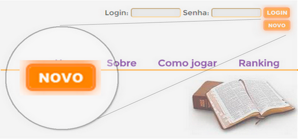
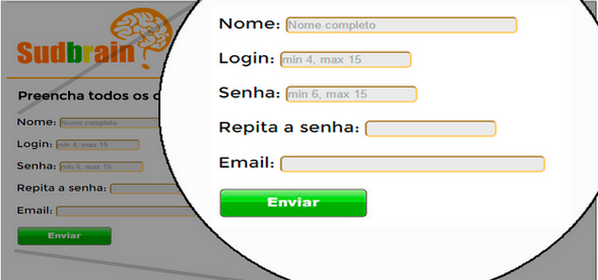
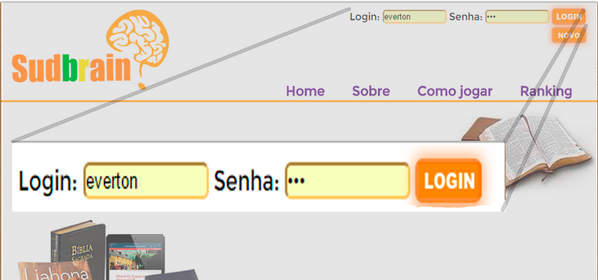
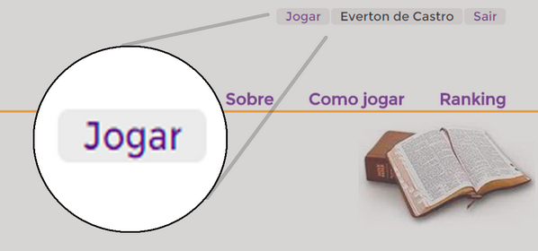
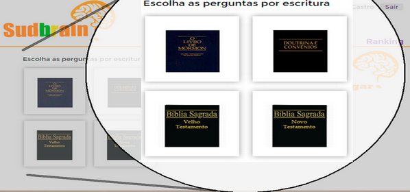
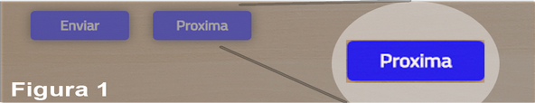
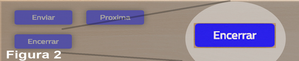

Clique nos Links ao lado para navegar pelo tutorial
Perguntas
Apenas uma alternativa é a correta em todas as perguntas. Escolha uma entre as quatro alternativas.

Clique nos Links ao lado para navegar pelo tutorial
Clique no botão NOVO conforme a figura abaixo para acessar a página com o formulário para inserção dos dados do novo usuário.
Preencha todas as informações solicitadas no formulário. Depois clique no botão enviar. Caso alguma informação não esteja adequada com o padrão uma mensagem será exibida
Nas caixas texto destacadas abaixo insira seu Login e Senha criados anteriormente. Em seguida clique no botão Login
Após efetuar Login clique no botão Jogar para acessar a página com opções de jogos
No painel de Jogos escolha a fonte das perguntas por escritura. Estão disponíveis: Livro de Mórmon, Doutrina e Convênios, Velho e Novo Testamento.
Apenas uma alternativa é a correta em todas as perguntas. Escolha uma entre as quatro alternativas.
FIGURA 1: Após clicar no botão enviar, se a resposta estiver correta, o botão "Próxima" pergunta será habilitado. Clique para exibir a próxima pergunta.
FIGURA 2: Se a resposta estiver incorreta todos os botões serão desabilitados e surgirá o botão "Encerrar". Clique para encerrar o jogo e ver sua pontuação.
Durante cada jogo voce contará com auxílios, sendo 3 "Pulos", 1 "Ajuda de Terceiros" e 1 "Sorteio".
PULOS: Ao pular você solicita uma nova pergunta, mas isso não mudará o seu nível no jogo.
AJUDA: Ao solicitar ajuda, três pessoas fornecerão sua opinião sobre a resposta.
SORTEIO: Aqui você poderá sortear um número, sendo 1, 2 ou 3, basta clicar no botão "Sorteio". Este número eliminará uma quantidade de alternativas incorretas de acordo com seu valor sorteado.